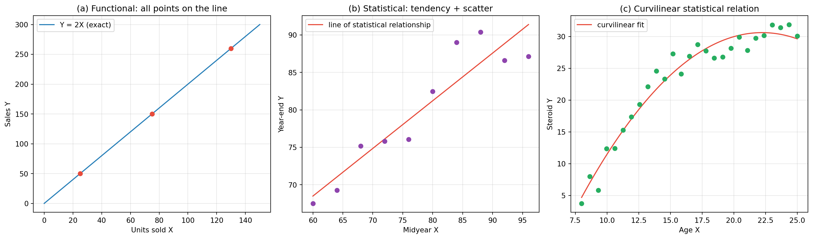
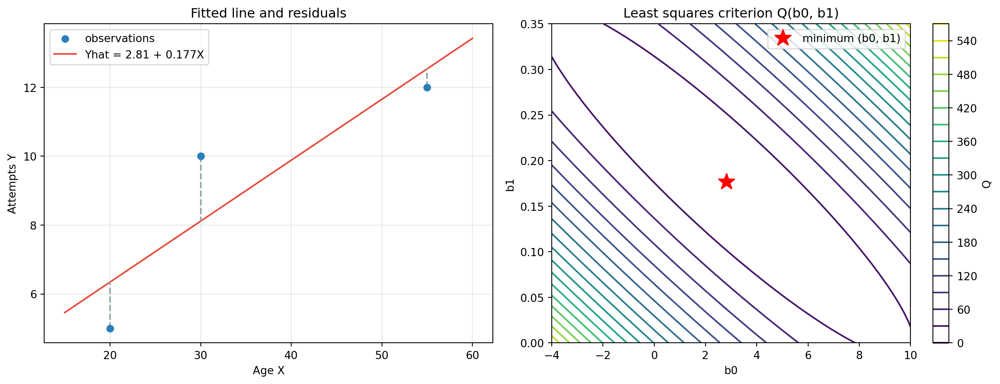
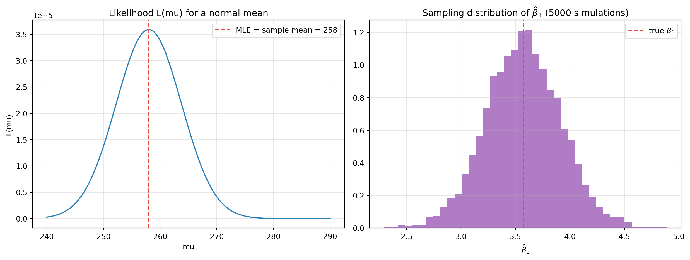

flowchart TD
A["Exploratory data analysis"] --> B["Develop one or more tentative regression models"]
B --> C["Check appropriateness for the data"]
C -- "not suitable" --> D["Revise models / develop new ones"]
D --> C
C -- "suitable" --> E["Make inferences (parameters, predictions)"]
E --> F["Stop"]
Kutner Chapter 1: Linear Regression with One Predictor Variable
Functional versus statistical relations, regression models and their uses, the simple linear regression model, least squares estimation of the regression function, the error variance, the normal error model, and maximum likelihood — with a Python laboratory
Statistics
Regression
Linear Models
Data Analysis
Mathematics
Comprehensive notes on Chapter 1 of Kutner, Nachtsheim, Neter, and Li’s Applied Linear Statistical Models. Covers functional versus statistical relations, scatter plots, Galton’s origins of regression, the probability-distribution interpretation of a regression model, the regression function and curve, multiple predictors, model construction (predictor selection, functional form, scope), the uses of regression (description, control, prediction), causality, observational versus experimental data and completely randomized designs, the flow of a regression analysis, the simple linear regression model with unspecified error distribution, the meaning of the parameters, least squares estimation and the normal equations, the Gauss-Markov theorem, point estimation of the mean response, fitted values and residuals, the six properties of the fitted line, estimation of the error variance via SSE and MSE, the normal error regression model, and maximum likelihood estimation (showing the MLEs of the slopes equal least squares and the MLE of the variance is biased), with an executable Python laboratory.
Regression analysis is a statistical methodology that uses the relation between two or more quantitative variables so that a response (outcome) variable can be predicted from the other(s). It is one of the most widely used tools in business, the social and behavioral sciences, the biological sciences, and engineering.
These are notes on Chapter 1 of Kutner, Nachtsheim, Neter & Li, Applied Linear Statistical Models (ALSM) — the foundations of simple linear regression. Everything is developed first without assuming a distribution for the errors, then with the normal error model.
TipCompanion Reading
1.1 Relations between Variables
Regression is about relations between variables. ALSM distinguishes two kinds.
Functional relation
A functional relation is exact and expressed by a mathematical formula \(Y=f(X)\): given \(X\), the formula gives \(Y\) with no error. Example (ALSM): dollar sales \(Y\) at a fixed price of $2 per unit versus units sold \(X\), \[Y = 2X.\] Every observed point lies exactly on the line. Functional relations are the exception, not the rule, in real data.
Statistical relation
A statistical relation is not perfect: the observations scatter around the curve of relationship. Example (ALSM): midyear and year-end performance evaluations of 10 employees. Plotting year-end \(Y\) against midyear \(X\) shows a tendency — higher midyear evaluations go with higher year-end evaluations — but with scatter, because two employees with the same midyear score can receive different year-end scores.
- The plot is a scatter diagram (scatter plot).
- Each point is a trial or case.
- Fitting a line through the cloud gives the line of statistical relationship: it describes the general tendency, not each point.
- The scatter around the line is variation not associated with \(X\) and is usually treated as random.
Statistical relations can be linear or curvilinear. ALSM’s third example — steroid level versus age for 27 healthy females aged 8–25 — is clearly curvilinear: steroid level rises, then levels off. The choice of functional form (linear vs curvilinear) is part of the modelling problem.
| Functional | Statistical | |
|---|---|---|
| Relation | exact, deterministic | tendency plus scatter |
| Points | all on the curve | scattered around the curve |
| Example | sales \(=2\times\) units | year-end vs midyear rating |
| Role of randomness | none | essential |
1.2 Regression Models and Their Uses
Historical origins
Sir Francis Galton (late 19th century) studied heights of parents and children and found that children of very tall or very short parents tended to “regress” toward the mean of the group. His mathematical description of this tendency is the precursor of the modern regression model, and the word regression survives from it.
The two ingredients of a regression model
A regression model formalizes exactly the two features of a statistical relation:
- a systematic tendency of \(Y\) to vary with \(X\);
- scatter around that tendency.
Formally it postulates:
- a probability distribution of \(Y\) for each level of \(X\) (the formal counterpart of scatter);
- the means of these distributions vary systematically with \(X\) (the formal counterpart of tendency).
The function relating the means to \(X\) is the regression function of \(Y\) on \(X\), and its graph is the regression curve. In the performance-evaluation example, for each midyear score \(X\) there is a distribution of year-end scores; the observed value is a draw from that distribution. If the means rise but with diminishing returns, the regression curve is curvilinear.
More than one predictor
With two predictors \(X_1,X_2\), the model assumes a probability distribution of \(Y\) for each \((X_1,X_2)\) combination, and the means trace out a regression surface rather than a curve. ALSM gives three multi-predictor examples: branch-office operating cost (four predictors), tractor purchases (nine), and peak plasma growth hormone in short children (fourteen). Parts II and III of the book handle these; Part I handles one predictor.
Constructing a regression model
Three decisions:
- Selection of predictor variables. Reality must be reduced to a manageable model, so only a limited number of predictors can (or should) be included. A good predictor is one that reduces the remaining variation in \(Y\) after allowing for the others, and that matters causally, is measurable accurately/cheaply, and can be controlled. (Chapter 9 studies selection.)
- Functional form. Sometimes theory dictates the shape of the regression function; more often it is chosen empirically. Linear or quadratic functions are common first approximations — even when the true form is complex, a linear (or piecewise-linear) approximation may be adequate.
- Scope of the model. The model is restricted to an interval or region of predictor values, set by the design or the data at hand. A price study over $4.95–$6.95 says nothing reliable below $4.95 or above $6.95.
Uses of regression analysis
- Description — describe the relation (e.g. tractor purchases).
- Control — set standards or administratively control a process (e.g. branch-office cost standards).
- Prediction — predict a response (e.g. growth-hormone deficiency from simple measurements).
In practice these overlap: knowing a cost relation lets management both set standards and predict costs.
Regression and causality
A statistical relation does not imply causation. A positive relation between vocabulary (\(X\)) and writing speed (\(Y\)) in children does not mean vocabulary causes faster writing; age drives both. Causation can even run backwards: when calibrating a thermometer, the thermometer reading is the predictor \(X\) and the true temperature the response \(Y\), yet the true temperature causes the reading. Regression by itself says nothing about causal direction and must be supplemented by other analyses.
Use of computers
Regression calculations are tedious, so they are done on computers; almost every statistics package has a regression component and the basic output is similar — in ALSM the outputs come from BMDP, MINITAB, SAS, SPSS, SYSTAT, JMP, S-Plus, and MATLAB. Here we use Python.
1.3 Simple Linear Regression Model (Error Distribution Unspecified)
Formal statement
For a single predictor with a linear regression function: \[Y_i = \beta_0 + \beta_1 X_i + \varepsilon_i \tag{1.1}\] where
- \(Y_i\) — value of the response in the \(i\)-th trial;
- \(X_i\) — the known constant predictor value in the \(i\)-th trial;
- \(\beta_0,\beta_1\) — parameters (regression coefficients);
- \(\varepsilon_i\) — a random error term with \(E\{\varepsilon_i\}=0\), \(\sigma^2\{\varepsilon_i\}=\sigma^2\), and \(\sigma\{\varepsilon_i,\varepsilon_j\}=0\) for \(i\ne j\);
- \(i=1,\dots,n\).
The model is simple (one predictor), linear in the parameters (no parameter appears as an exponent or is multiplied/divided by another), and linear in the predictor (only the first power appears). It is a first-order model.
Features
- \(Y_i\) is a random variable, the sum of the constant \(\beta_0+\beta_1X_i\) and the random \(\varepsilon_i\).
- Because \(E\{\varepsilon_i\}=0\), \[E\{Y_i\} = \beta_0 + \beta_1 X_i, \tag{1.2}\] so the regression function is \(E\{Y\}=\beta_0+\beta_1X\). (1.3)
- \(Y_i\) exceeds or falls short of the regression function by \(\varepsilon_i\).
- Since \(\sigma^2\{\varepsilon_i\}=\sigma^2\), \[\sigma^2\{Y_i\}=\sigma^2 \tag{1.4}\] — the response distributions all have the same variance, regardless of \(X\) (homoscedasticity).
- Uncorrelated errors imply uncorrelated responses \(Y_i,Y_j\).
- In summary: responses come from distributions with means \(\beta_0+\beta_1X_i\) and constant variance \(\sigma^2\), and any two responses are uncorrelated.
Meaning of the parameters
- \(\beta_1\) is the slope: the change in the mean of \(Y\) per unit increase in \(X\).
- \(\beta_0\) is the \(Y\) intercept: the mean of \(Y\) at \(X=0\) only when the scope includes \(X=0\); otherwise it has no separate meaning.
ALSM’s electrical-distributor example: \(Y_i=9.5+2.1X_i+\varepsilon_i\), where \(X\) is the number of bids prepared per week and \(Y\) is hours required. Here \(\beta_1=2.1\) means one extra bid raises the mean time by 2.1 hours. If in a week \(X_i=45\) and \(Y_i=108\), then \(E\{Y_i\}=9.5+2.1(45)=104\), so \(\varepsilon_i=4\).
Alternative versions
With \(X_0\equiv1\), \[Y_i=\beta_0X_0+\beta_1X_i+\varepsilon_i,\qquad X_0\equiv1. \tag{1.5}\] Or, centred on the sample mean \(\bar X\), \[Y_i=\beta_0'+\beta_1(X_i-\bar X)+\varepsilon_i,\qquad \beta_0'=\beta_0+\beta_1\bar X. \tag{1.6}\] All three forms are the same model; the centred form is convenient numerically and makes \(\beta_0'\) equal the mean response at \(\bar X\).
1.4 Data for Regression Analysis
Observational data
Observational data come from nonexperimental studies: the predictor is not controlled (e.g. age of employee read from personnel records). They are common because controlled experiments are often impossible (you cannot assign age). Their major limitation is weak causal information: a positive age–illness relation may really be driven by work location, not age.
Experimental data
Experimental data come from controlled experiments in which the predictor is assigned. ALSM’s example: 9 analysts randomly assigned to 2, 3, or 5 weeks of training, then productivity observed. Control (via randomization) gives much stronger causal information because randomization tends to balance other variables. Terminology:
- treatment — the assigned condition (length of training);
- experimental units — the subjects (analysts);
- control — assigning treatments to units at random.
Completely randomized design
The basic design assigning treatments to units (or vice versa) completely at random. It makes all treatment–unit combinations equally likely, so every unit has an equal chance of any treatment. It is flexible (any number of treatments, unequal sample sizes) and ideal when units are homogeneous; its weakness is inefficiency when units are heterogeneous.
1.5 Overview of Steps in Regression Analysis
The models here apply to observational data or to experimental data from a completely randomized design. The practical flow (ALSM Figure 1.8):
With strong prior theory one may skip straight to inferences; usually one explores, fits tentative models, checks them, revises, and only then makes inferences. For pedagogy the book begins with inference for a suitable model, because you must understand models before you can judge their suitability.
1.6 Estimation of the Regression Function
Data are pairs \((X_i,Y_i)\), \(i=1,\dots,n\). ALSM’s persistence study has \(n=3\):
| Subject \(i\) | 1 | 2 | 3 |
|---|---|---|---|
| Age \(X_i\) | 20 | 55 | 30 |
| Attempts \(Y_i\) | 5 | 12 | 10 |
Method of least squares
For each case, the deviation of \(Y_i\) from its expected value is \(Y_i-\beta_0-\beta_1X_i\). The least squares criterion is \[Q=\sum_{i=1}^n (Y_i-\beta_0-\beta_1X_i)^2. \tag{1.8}\] The least squares estimators \(b_0,b_1\) are the values of \(\beta_0,\beta_1\) minimizing \(Q\).
Normal equations and estimators
Differentiating \(Q\) with respect to \(\beta_0\) and \(\beta_1\), setting the derivatives to zero, and simplifying gives the normal equations \[\sum Y_i = n b_0 + b_1\sum X_i, \tag{1.9a}\] \[\sum X_iY_i = b_0\sum X_i + b_1\sum X_i^2. \tag{1.9b}\] Solving them, \[\boxed{\,b_1=\frac{\sum (X_i-\bar X)(Y_i-\bar Y)}{\sum (X_i-\bar X)^2}\,} \tag{1.10a}\] \[\boxed{\,b_0=\bar Y-b_1\bar X\,} \tag{1.10b}\] so the estimated regression function is \[\hat Y=b_0+b_1X. \tag{1.12}\]
Gauss–Markov theorem
Under the conditions of regression model (1.1), the least squares estimators \(b_0\) and \(b_1\) are unbiased and have minimum variance among all unbiased linear estimators.
That is, \(E\{b_0\}=\beta_0\), \(E\{b_1\}=\beta_1\), and no other unbiased linear estimator is more precise. Writing \(b_1=\sum k_iY_i\) with \(k_i=(X_i-\bar X)/\sum(X_j-\bar X)^2\) shows \(b_1\) (and similarly \(b_0\)) is linear in the \(Y_i\).
The Toluca Company example
A manufacturer relates lot size \(X\) to labor hours \(Y\) using \(n=25\) production runs. Summary quantities from ALSM Table 1.1: \[\sum(X_i-\bar X)(Y_i-\bar Y)=70{,}690,\quad \sum(X_i-\bar X)^2=19{,}800,\quad \bar X=70.0,\quad \bar Y=312.28.\] Then \[b_1=\frac{70{,}690}{19{,}800}=3.5702,\qquad b_0=312.28-3.5702(70.0)=62.37,\] so \[\hat Y=62.37+3.5702\,X.\] Interpretation: each additional unit in the lot raises mean work hours by about 3.57 hours, valid over the observed lot-size range (about 20–120).
Point estimation of the mean response
Substituting a level \(X\) gives the point estimator of the mean response at that level: \[\hat Y=b_0+b_1X.\] For the sample cases these are the fitted values \(\hat Y_i=b_0+b_1X_i\), contrasted with the observed \(Y_i\). For Toluca at \(X=65\): \[\hat Y=62.37+3.5702(65)=294.4\] hours — an estimate of the mean labor time for many lots of 65 under the same conditions, not a prediction for any single lot.
Residuals
The \(i\)-th residual is \[e_i=Y_i-\hat Y_i=Y_i-b_0-b_1X_i. \tag{1.16a}\] Crucially, distinguish the residual \(e_i\) (deviation from the fitted line, known) from the error \(\varepsilon_i=Y_i-E\{Y_i\}\) (deviation from the true line, unknown). Residuals are the main tool for checking model adequacy (Chapter 3).
Properties of the fitted line
For the least squares line:
- \(\sum e_i=0\) — residuals sum to zero. (1.17)
- \(\sum e_i^2\) is a minimum (that is what least squares minimizes).
- \(\sum Y_i=\sum \hat Y_i\), so the fitted values have the same mean as the observations. (1.18)
- \(\sum X_i e_i=0\) — residuals are uncorrelated with \(X\).
- \(\sum \hat Y_i e_i=0\) — residuals are uncorrelated with the fitted values.
- The line passes through \((\bar X,\bar Y)\).
1.7 Estimation of the Error Variance \(\sigma^2\)
The variance \(\sigma^2\) of the errors measures the variability of the response distributions and is needed for inference.
- Single population. The sample variance is \(s^2=\sum(Y_i-\bar Y)^2/(n-1)\): a sum of squares divided by its degrees of freedom (\(n-1\), losing one for estimating the mean). This is a mean square.
- Regression model. Each \(Y_i\) has its own mean, so deviations are measured around \(\hat Y_i\): \[SSE=\sum_{i=1}^n (Y_i-\hat Y_i)^2=\sum e_i^2, \tag{1.21}\] the error (residual) sum of squares. Two degrees of freedom are lost for estimating \(\beta_0,\beta_1\), so \(SSE\) has \(n-2\) df. The error mean square is \[s^2=MSE=\frac{SSE}{n-2}=\frac{\sum e_i^2}{n-2},\qquad E\{MSE\}=\sigma^2. \tag{1.22, 1.23}\] An estimator of \(\sigma\) is \(s=\sqrt{MSE}\).
For Toluca, \(SSE=54{,}825\) with \(25-2=23\) df, so \[s^2=\frac{54{,}825}{23}=2{,}384,\qquad s=\sqrt{2{,}384}=48.8\text{ hours}.\] So for lots of 65, the mean response is estimated at 294.4 hours with an estimated standard deviation of 48.8 hours — substantial variability.
1.8 Normal Error Regression Model
Least squares needs no distributional assumption for unbiasedness and min-variance-among-linear-unbiased. But interval estimates and tests require a distribution. The standard choice: normal errors. \[Y_i=\beta_0+\beta_1X_i+\varepsilon_i,\qquad \varepsilon_i\text{ independent }N(0,\sigma^2). \tag{1.24}\]
Comments:
- \(N(0,\sigma^2)\) means normal with mean 0 and variance \(\sigma^2\).
- Model (1.24) is model (1.1) plus normality of the errors.
- Normality upgrades uncorrelated to independent errors.
- Hence the \(Y_i\) are independent normal with mean \(\beta_0+\beta_1X_i\) and constant variance \(\sigma^2\).
- Normality is often justified because the error aggregates many omitted random factors (central limit theorem) and because the \(t\)-based procedures are fairly robust to mild non-normality (especially to kurtosis; skewness is more damaging).
Maximum likelihood estimation
The method of maximum likelihood chooses the parameter values most consistent with the data, measuring consistency by the likelihood \(L\) = product of the densities at the observations.
Single population. For a normal population with known \(\sigma=10\) and sample \(250,265,259\): \[L(\mu)=\prod_{i=1}^3 \frac{1}{\sqrt{2\pi}\,\sigma}\exp\!\left[-\frac{1}{2}\left(\frac{Y_i-\mu}{\sigma}\right)^2\right],\] which is maximized at the sample mean \(\hat\mu=\bar Y=258\) (so the MLE of a normal mean is the sample mean). The likelihood is peaked, so the estimate is relatively precise.
Regression model. Each \(Y_i\sim N(\beta_0+\beta_1X_i,\sigma^2)\), so the likelihood is \[L(\beta_0,\beta_1,\sigma^2)=\prod_{i=1}^n \frac{1}{(2\pi\sigma^2)^{1/2}}\exp\!\left[-\frac{1}{2\sigma^2}(Y_i-\beta_0-\beta_1X_i)^2\right]. \tag{1.26}\] Maximizing (equivalently, maximizing \(\log L\); see (1.29)) gives \[\hat\beta_0=b_0,\qquad \hat\beta_1=b_1,\qquad \hat\sigma^2=\frac{\sum(Y_i-\hat Y_i)^2}{n}. \tag{1.27}\] So:
- the MLEs of the slope and intercept equal the least squares estimators;
- the MLE of \(\sigma^2\) is biased (divide by \(n\)), so the unbiased \(MSE=SSE/(n-2)\) is ordinarily used, differing from \(\hat\sigma^2\) by \[s^2=MSE=\frac{n}{n-2}\,\hat\sigma^2. \tag{1.28}\]
For the normal error model, \(b_0,b_1\) are unbiased, minimum-variance-linear, consistent, sufficient, and in fact minimum variance unbiased among all unbiased estimators.
Python Laboratory
The full workflow — least squares by hand and by linear algebra, the fitted line and residuals, the six properties, \(SSE/MSE\), the MLE, and the sampling behaviour of \(b_1\) — is easy to reproduce in Python. No external data files are required.
Relations between Variables: Functional, Statistical, and Curvilinear
Code
# =====================================================================
# 1.1 FUNCTIONAL, STATISTICAL, AND CURVILINEAR RELATIONS
# ---------------------------------------------------------------------
# This cell makes the chapter's first distinction concrete.
# * Functional relation : an exact formula, every point on the curve.
# * Statistical relation: a systematic tendency PLUS random scatter,
# so points do NOT lie on the curve.
# * Curvilinear relation: a statistical relation whose curve is bent.
# =====================================================================
import numpy as np
import matplotlib.pyplot as plt
rng = np.random.default_rng(0)
# ---- (a) Functional relation: dollar sales = $2 x units sold ----
units = np.array([75, 25, 130]) # three observed numbers of units
sales = 2.0 * units # the EXACT formula Y = 2X
xline = np.linspace(0, 150, 100) # a grid for drawing the line
# ---- (b) Statistical relation: midyear vs year-end evaluations ----
# We simulate 10 employees. Each year-end score is a linear tendency in
# the midyear score PLUS independent random scatter (the part of Y that
# the predictor X does not explain).
midyear = np.arange(60, 100, 4) # 10 midyear scores, 60..96
yearend = 0.7 * midyear + 25 + rng.normal(0, 4, size=midyear.size)
# ---- (c) Curvilinear statistical relation: steroid level vs age ----
# The mean rises quickly at first, then saturates; we add scatter too.
age = np.linspace(8, 25, 27) # 27 healthy females, ages 8..25
steroid = 5 + 28 * (1 - np.exp(-(age - 8) / 6)) + rng.normal(0, 2, size=age.size)
fig, axes = plt.subplots(1, 3, figsize=(16, 4.8))
# panel (a): functional
axes[0].plot(xline, 2 * xline, color="#2980b9", label="Y = 2X (exact)")
axes[0].scatter(units, sales, color="#e74c3c", zorder=3)
axes[0].set_title("(a) Functional: all points on the line")
axes[0].set_xlabel("Units sold X"); axes[0].set_ylabel("Sales Y"); axes[0].legend()
# panel (b): statistical (linear tendency + scatter)
axes[1].scatter(midyear, yearend, color="#8e44ad", zorder=3)
slope, intercept = np.polyfit(midyear, yearend, 1) # least squares line
axes[1].plot(midyear, intercept + slope * midyear, color="#e74c3c",
label="line of statistical relationship")
axes[1].set_title("(b) Statistical: tendency + scatter")
axes[1].set_xlabel("Midyear X"); axes[1].set_ylabel("Year-end Y"); axes[1].legend()
# panel (c): curvilinear statistical
axes[2].scatter(age, steroid, color="#27ae60", zorder=3)
xx = np.linspace(age.min(), age.max(), 200)
c2 = np.polyfit(age, steroid, 2) # quadratic curve
axes[2].plot(xx, np.polyval(c2, xx), color="#e74c3c", label="curvilinear fit")
axes[2].set_title("(c) Curvilinear statistical relation")
axes[2].set_xlabel("Age X"); axes[2].set_ylabel("Steroid Y"); axes[2].legend()
for ax in axes:
ax.grid(alpha=0.3)
plt.tight_layout(); plt.show()
# A numeric check that matters for (a): the points satisfy the formula exactly.
print("=== FUNCTIONAL RELATION IS EXACT ===")
for u, s in zip(units, sales):
print(f" X = {u:3d}: Y = 2X = {s:3.0f} -> residual = {s - 2*u:.1e}")
print("\n=== STATISTICAL RELATION HAS SCATTER ===")
resid = yearend - (intercept + slope * midyear)
print(f" residuals range from {resid.min():+.2f} to {resid.max():+.2f} (not zero)")
print(f" sum of squared residuals = {(resid**2).sum():.2f} > 0")
=== FUNCTIONAL RELATION IS EXACT ===
X = 75: Y = 2X = 150 -> residual = 0.0e+00
X = 25: Y = 2X = 50 -> residual = 0.0e+00
X = 130: Y = 2X = 260 -> residual = 0.0e+00
=== STATISTICAL RELATION HAS SCATTER ===
residuals range from -4.26 to +5.26 (not zero)
sum of squared residuals = 82.57 > 0Four Ways to Fit the Same Least Squares Line
Code
# =====================================================================
# 1.6 FOUR WAYS TO FIT THE SAME LEAST SQUARES LINE
# ---------------------------------------------------------------------
# All four methods minimise the SAME criterion
# Q(b0, b1) = sum_i (Y_i - b0 - b1 X_i)^2
# so they must return identical estimates. Seeing them together shows
# what "least squares" really means and why every software package
# reports the same numbers.
# =====================================================================
import numpy as np
X = np.array([20.0, 55.0, 30.0]) # predictor (age in the persistence study)
Y = np.array([5.0, 12.0, 10.0]) # response (attempts)
n = len(X)
# ---- Method 1: closed-form (centred) formulas ----
# b1 = sum((X-Xbar)(Y-Ybar)) / sum((X-Xbar)^2), then b0 = Ybar - b1 Xbar.
Xbar, Ybar = X.mean(), Y.mean()
b1 = np.sum((X - Xbar) * (Y - Ybar)) / np.sum((X - Xbar) ** 2)
b0 = Ybar - b1 * Xbar
# ---- Method 2: solve the normal equations directly ----
# Build the design matrix M = [1, X] (a column of ones then the X column).
# The least squares problem minimises ||Y - M b||^2; the normal equations
# are (M'M) b = M'Y, which we solve with np.linalg.solve.
M = np.column_stack([np.ones(n), X]) # n x 2 design matrix
b_normal = np.linalg.solve(M.T @ M, M.T @ Y)
# ---- Method 3: least squares via QR/SVD ----
# np.linalg.lstsq uses a QR decomposition (or SVD) and is numerically the
# most stable; it never squares the conditioning of the problem.
b_lstsq, *_ = np.linalg.lstsq(M, Y, rcond=None)
# ---- Method 4: gradient descent on Q (numerical optimisation) ----
# We parametrise Y = c + m (X - Xbar) for better conditioning, then
# translate back: b0 = c - m*Xbar, b1 = m.
# Gradients: dQ/dc = -2 sum(resid), dQ/dm = -2 sum((X-Xbar) resid).
xc = X - Xbar
c, m, lr = 0.0, 0.0, 1e-3
for _ in range(200000):
resid = Y - (c + m * xc) # current residuals
c -= lr * (-2 * resid.sum()) # step c downhill
m -= lr * (-2 * (xc * resid).sum()) # step m downhill
b_gd = np.array([c - m * Xbar, m])
print("=== FOUR METHODS FOR THE SAME LEAST SQUARES FIT ===")
print(f" 1. closed form : b0 = {b0:.4f}, b1 = {b1:.4f}")
print(f" 2. normal equations : b0 = {b_normal[0]:.4f}, b1 = {b_normal[1]:.4f}")
print(f" 3. lstsq (QR/SVD) : b0 = {b_lstsq[0]:.4f}, b1 = {b_lstsq[1]:.4f}")
print(f" 4. gradient descent : b0 = {b_gd[0]:.4f}, b1 = {b_gd[1]:.4f}")
print(f" all four minimise Q = {np.sum((Y - (b0 + b1*X))**2):.4f}")=== FOUR METHODS FOR THE SAME LEAST SQUARES FIT ===
1. closed form : b0 = 2.8077, b1 = 0.1769
2. normal equations : b0 = 2.8077, b1 = 0.1769
3. lstsq (QR/SVD) : b0 = 2.8077, b1 = 0.1769
4. gradient descent : b0 = 2.8077, b1 = 0.1769
all four minimise Q = 5.6538Least Squares, Fitted Values, and Residuals
Code
import numpy as np
import matplotlib.pyplot as plt
X = np.array([20.0, 55.0, 30.0])
Y = np.array([5.0, 12.0, 10.0])
Xbar, Ybar = X.mean(), Y.mean()
b1 = np.sum((X - Xbar) * (Y - Ybar)) / np.sum((X - Xbar)**2)
b0 = Ybar - b1 * Xbar
Yhat = b0 + b1 * X
e = Y - Yhat
SSE = np.sum(e**2)
print("=== PERSISTENCE STUDY (n=3) ===")
print(f" Xbar = {Xbar}, Ybar = {Ybar}")
print(f" b1 = {b1:.4f}, b0 = {b0:.4f} -> Yhat = {b0:.2f} + {b1:.3f} X")
print(f" fitted values: {np.round(Yhat, 3).tolist()}")
print(f" residuals : {np.round(e, 3).tolist()}")
print(f" SSE = Q : {SSE:.3f} (sum of residuals = {e.sum():.2e})")
print(f" MSE = SSE/(n-2) = {SSE/(len(X)-2):.3f}")
fig, axes = plt.subplots(1, 2, figsize=(13, 5))
axes[0].scatter(X, Y, color="#2980b9", zorder=3, label="observations")
xs = np.linspace(15, 60, 100)
axes[0].plot(xs, b0 + b1 * xs, color="#e74c3c", label=f"Yhat = {b0:.2f} + {b1:.3f}X")
for xi, yi, yh in zip(X, Y, Yhat):
axes[0].plot([xi, xi], [yi, yh], color="#95a5a6", ls="--", lw=1.5)
axes[0].set_title("Fitted line and residuals"); axes[0].set_xlabel("Age X"); axes[0].set_ylabel("Attempts Y")
axes[0].legend(); axes[0].grid(alpha=0.3)
# contour of Q(b0, b1)
b0g = np.linspace(-4, 10, 200)
b1g = np.linspace(0.0, 0.35, 200)
B0, B1 = np.meshgrid(b0g, b1g)
Q = sum((Y[i] - B0 - B1 * X[i])**2 for i in range(len(X)))
cs = axes[1].contour(B0, B1, Q, levels=20, cmap="viridis")
axes[1].plot(b0, b1, "r*", ms=16, label="minimum (b0, b1)")
axes[1].set_title("Least squares criterion Q(b0, b1)"); axes[1].set_xlabel("b0"); axes[1].set_ylabel("b1")
axes[1].legend(); plt.colorbar(cs, ax=axes[1], label="Q")
plt.tight_layout(); plt.show()=== PERSISTENCE STUDY (n=3) ===
Xbar = 35.0, Ybar = 9.0
b1 = 0.1769, b0 = 2.8077 -> Yhat = 2.81 + 0.177 X
fitted values: [6.346, 12.538, 8.115]
residuals : [-1.346, -0.538, 1.885]
SSE = Q : 5.654 (sum of residuals = -3.55e-15)
MSE = SSE/(n-2) = 5.654
Linear Algebra, the Six Properties, and the MLE
Code
import numpy as np
from scipy import stats
# --- Toluca Company: reproduce the book's estimates from summary statistics ---
n, Xbar_t, Ybar_t = 25, 70.0, 312.28
Sxy, Sxx, SSE_t = 70_690.0, 19_800.0, 54_825.0
b1_t = Sxy / Sxx
b0_t = Ybar_t - b1_t * Xbar_t
s2_t = SSE_t / (n - 2)
print("=== TOLUCA COMPANY (from summary statistics) ===")
print(f" b1 = {b1_t:.4f}, b0 = {b0_t:.2f} -> Yhat = {b0_t:.2f} + {b1_t:.4f} X")
print(f" MSE = {s2_t:.1f}, s = {np.sqrt(s2_t):.1f}")
print(f" predicted mean hours at X=65: {b0_t + b1_t*65:.1f}")
# --- simulate a dataset consistent with the model, then check every property ---
rng = np.random.default_rng(7)
x = rng.uniform(20, 120, 25)
y = 62.37 + 3.5702 * x + rng.normal(0, 48.8, 25)
M = np.column_stack([np.ones_like(x), x])
beta, *_ = np.linalg.lstsq(M, y, rcond=None) # solves the normal equations M'M b = M'y
yhat = M @ beta
e = y - yhat
print("\n=== SIMULATED DATA: OLS via linear algebra ===")
print(f" b0 = {beta[0]:.3f}, b1 = {beta[1]:.4f}")
print(f" sum(e) = {e.sum():.2e}, sum(x*e) = {np.sum(x*e):.2e}, sum(yhat*e) = {np.sum(yhat*e):.2e}")
print(f" sum(Y) - sum(Yhat) = {y.sum() - yhat.sum():.2e}")
print(f" line passes through (xbar, ybar)? yhat(xbar) = {beta[0] + beta[1]*x.mean():.3f}, ybar = {y.mean():.3f}")
# --- MLE vs unbiased variance ---
SSE = np.sum(e**2)
sigma2_mle = SSE / len(x) # MLE: divide by n (biased)
s2 = SSE / (len(x) - 2) # unbiased MSE
print("\n=== VARIANCE ESTIMATION ===")
print(f" sigma2_MLE = SSE/n = {sigma2_mle:.2f} (biased)")
print(f" s^2 = MSE = SSE/(n-2) = {s2:.2f} (unbiased), ratio n/(n-2) = {len(x)/(len(x)-2):.4f}")=== TOLUCA COMPANY (from summary statistics) ===
b1 = 3.5702, b0 = 62.37 -> Yhat = 62.37 + 3.5702 X
MSE = 2383.7, s = 48.8
predicted mean hours at X=65: 294.4
=== SIMULATED DATA: OLS via linear algebra ===
b0 = 84.889, b1 = 3.1008
sum(e) = 1.38e-12, sum(x*e) = 1.04e-10, sum(yhat*e) = 4.53e-10
sum(Y) - sum(Yhat) = 1.82e-12
line passes through (xbar, ybar)? yhat(xbar) = 303.121, ybar = 303.121
=== VARIANCE ESTIMATION ===
sigma2_MLE = SSE/n = 2038.21 (biased)
s^2 = MSE = SSE/(n-2) = 2215.45 (unbiased), ratio n/(n-2) = 1.0870The Likelihood and the Sampling Distribution of \(b_1\)
Code
import numpy as np
from scipy import stats
import matplotlib.pyplot as plt
fig, axes = plt.subplots(1, 2, figsize=(13, 5))
# --- likelihood for a normal mean ---
sample, sigma = np.array([250.0, 265.0, 259.0]), 10.0
mu = np.linspace(240, 290, 500)
L = np.prod([stats.norm.pdf(s, mu, sigma) for s in sample], axis=0)
mu_hat = sample.mean()
axes[0].plot(mu, L, color="#2980b9")
axes[0].axvline(mu_hat, color="#e74c3c", ls="--", label=f"MLE = sample mean = {mu_hat:.0f}")
axes[0].set_title("Likelihood L(mu) for a normal mean"); axes[0].set_xlabel("mu"); axes[0].set_ylabel("L(mu)")
axes[0].legend(); axes[0].grid(alpha=0.3)
# --- sampling distribution of b1 ---
rng = np.random.default_rng(1)
x = rng.uniform(20, 120, 25)
beta0, beta1, sigma = 62.37, 3.5702, 48.8
Sxx = np.sum((x - x.mean())**2)
b1s = []
for _ in range(5000):
y = beta0 + beta1 * x + rng.normal(0, sigma, len(x))
M = np.column_stack([np.ones_like(x), x])
b = np.linalg.lstsq(M, y, rcond=None)[0]
b1s.append(b[1])
b1s = np.array(b1s)
theory_sd = sigma / np.sqrt(Sxx)
axes[1].hist(b1s, bins=40, density=True, color="#8e44ad", alpha=0.7)
axes[1].axvline(beta1, color="#e74c3c", ls="--", label=r"true $\beta_1$")
axes[1].set_title(r"Sampling distribution of $\hat\beta_1$ (5000 simulations)")
axes[1].set_xlabel(r"$\hat\beta_1$"); axes[1].legend(); axes[1].grid(alpha=0.3)
plt.tight_layout(); plt.show()
print("=== SAMPLING BEHAVIOUR OF b1 ===")
print(f" simulated mean of b1 = {b1s.mean():.4f} (true beta1 = {beta1})")
print(f" simulated sd of b1 = {b1s.std():.4f}")
print(f" theoretical sd sqrt(sigma^2/Sxx) = {theory_sd:.4f}")
print(" unbiasedness (mean) and min-variance (spread) are exactly the Gauss-Markov claims.")
=== SAMPLING BEHAVIOUR OF b1 ===
simulated mean of b1 = 3.5694 (true beta1 = 3.5702)
simulated sd of b1 = 0.3443
theoretical sd sqrt(sigma^2/Sxx) = 0.3474
unbiasedness (mean) and min-variance (spread) are exactly the Gauss-Markov claims.R Companion
The same calculations in base R (R is not installed in the render environment, so these blocks are displayed rather than executed; copy them into R/RStudio to reproduce every number).
# =====================================================================
# 1.1 FUNCTIONAL, STATISTICAL, AND CURVILINEAR RELATIONS (base R)
# ---------------------------------------------------------------------
# Same three ideas as the Python figure, drawn with base graphics.
# =====================================================================
set.seed(0)
# (a) Functional relation: every point satisfies Y = 2X exactly.
units <- c(75, 25, 130)
sales <- 2 * units
plot(units, sales, pch = 19, col = "red", xlim = c(0, 150), ylim = c(0, 300),
xlab = "Units sold X", ylab = "Sales Y",
main = "(a) Functional: all points on the line")
abline(a = 0, b = 2, col = "steelblue", lwd = 2) # the exact line Y = 2X
# (b) Statistical relation: a linear tendency plus random scatter.
midyear <- seq(60, 96, by = 4) # 10 midyear scores
yearend <- 0.7 * midyear + 25 + rnorm(length(midyear), 0, 4) # tendency + noise
plot(midyear, yearend, pch = 19, col = "purple",
xlab = "Midyear X", ylab = "Year-end Y",
main = "(b) Statistical: tendency + scatter")
abline(lm(yearend ~ midyear), col = "red", lwd = 2) # least squares line
# (c) Curvilinear statistical relation: rises then levels off.
age <- seq(8, 25, length.out = 27)
steroid <- 5 + 28 * (1 - exp(-(age - 8) / 6)) + rnorm(length(age), 0, 2)
plot(age, steroid, pch = 19, col = "darkgreen",
xlab = "Age X", ylab = "Steroid Y",
main = "(c) Curvilinear statistical relation")
lines(age, predict(lm(steroid ~ poly(age, 2))), col = "red", lwd = 2)# =====================================================================
# 1.6 FOUR WAYS TO FIT THE SAME LEAST SQUARES LINE (base R)
# ---------------------------------------------------------------------
# All four minimise Q(b0, b1) = sum (Y - b0 - b1 X)^2 and must agree.
# =====================================================================
X <- c(20, 55, 30)
Y <- c(5, 12, 10)
# 1. Closed-form (centred) formulas.
b1 <- sum((X - mean(X)) * (Y - mean(Y))) / sum((X - mean(X))^2)
b0 <- mean(Y) - b1 * mean(X)
# 2. Solve the normal equations directly: (M'M) b = M'Y.
M <- cbind(1, X) # design matrix with a column of 1s
b_normal <- solve(t(M) %*% M, t(M) %*% Y)
# 3. lm(), which uses a QR decomposition internally.
b_lm <- coef(lm(Y ~ X))
# 4. Gradient descent on Q, in a centred parametrisation for conditioning.
xc <- X - mean(X); c0 <- 0; m <- 0; lr <- 1e-3
for (i in 1:200000) {
resid <- Y - (c0 + m * xc) # residuals at the current values
c0 <- c0 - lr * (-2 * sum(resid)) # step the intercept downhill
m <- m - lr * (-2 * sum(xc * resid)) # step the slope downhill
}
b_gd <- c(b0 = c0 - m * mean(X), b1 = m)
rbind(closed_form = c(b0, b1),
normal_eqns = b_normal,
lm = b_lm,
grad_descent = b_gd) # all four rows are identical# --- Persistence study (n = 3): least squares by hand and via lm ---
X <- c(20, 55, 30)
Y <- c(5, 12, 10)
b1 <- sum((X - mean(X)) * (Y - mean(Y))) / sum((X - mean(X))^2)
b0 <- mean(Y) - b1 * mean(X)
c(b0 = b0, b1 = b1) # 2.8077, 0.1769
fit <- lm(Y ~ X) # the same fit via the formula interface
coef(fit) # b0, b1
fitted(fit) # fitted values
resid(fit) # residuals (sum to ~0)
sum(resid(fit)^2) # SSE = Q# --- Toluca estimates from the chapter's summary statistics ---
n <- 25; xbar <- 70; ybar <- 312.28; Sxy <- 70690; Sxx <- 19800
b1 <- Sxy / Sxx
b0 <- ybar - b1 * xbar
c(b0 = b0, b1 = b1) # 62.37, 3.5702# --- A full sample: fit, summary, and the MLE vs unbiased variance ---
set.seed(7)
x <- runif(25, 20, 120)
y <- 62.37 + 3.5702 * x + rnorm(25, 0, 48.8)
fit <- lm(y ~ x)
summary(fit) # coefficients, SE, t, p, residual SE, R^2, F
SSE <- sum(resid(fit)^2)
c(MSE = SSE / (length(x) - 2), sigma2_mle = SSE / length(x))
predict(fit, data.frame(x = 65), interval = "confidence", level = 0.90)# --- Diagnostic plots (four-panel base R) ---
par(mfrow = c(2, 2))
plot(fit) # residuals vs fitted, Q-Q, scale-location, leverage
par(mfrow = c(1, 1))Summary
\[ \begin{aligned} &\textbf{Model: } && Y_i=\beta_0+\beta_1X_i+\varepsilon_i,\quad E\{\varepsilon_i\}=0,\ \sigma^2\{\varepsilon_i\}=\sigma^2,\ \text{uncorrelated.} \\[3pt] &\textbf{Regression function: } && E\{Y\}=\beta_0+\beta_1X;\quad \sigma^2\{Y_i\}=\sigma^2\ \text{(constant).} \\[3pt] &\textbf{Least squares: } && b_1=\tfrac{\sum(X_i-\bar X)(Y_i-\bar Y)}{\sum(X_i-\bar X)^2},\quad b_0=\bar Y-b_1\bar X,\quad \hat Y=b_0+b_1X. \\[3pt] &\textbf{Gauss–Markov: } && b_0,b_1 \text{ unbiased and minimum-variance among unbiased linear estimators.} \\[3pt] &\textbf{Variance: } && SSE=\sum e_i^2,\quad s^2=MSE=\tfrac{SSE}{n-2},\quad E\{MSE\}=\sigma^2. \\[3pt] &\textbf{Fitted-line properties: } && \sum e_i=0,\ \sum X_ie_i=0,\ \sum\hat Y_ie_i=0,\ \sum Y_i=\sum\hat Y_i,\ \text{line through }(\bar X,\bar Y). \\[3pt] &\textbf{Normal model: } && \varepsilon_i\sim N(0,\sigma^2);\ \text{MLE } \hat\beta_0=b_0,\ \hat\beta_1=b_1,\ \hat\sigma^2=SSE/n\ \text{(biased)}. \end{aligned} \]
The chapter’s message: a regression model is a probability distribution of \(Y\) for each \(X\), a tendency plus scatter; least squares estimates the tendency without distributional assumptions; and the normal error model adds the machinery for inference (Chapter 2) and model checking (Chapter 3).
Curated References and Further Reading
- Kutner, M., Nachtsheim, C., Neter, J. & Li, W. (2004). Applied Linear Statistical Models, 5th ed. McGraw-Hill. (Primary source: Chapter 1.)
- Galton, F. (1886). Regression Towards Mediocrity in Hereditary Stature. Journal of the Anthropological Institute.
- Plackett, R. L. (1972). Studies in the History of Probability and Statistics XXIX: The Discovery of the Method of Least Squares. Biometrika.
- Stigler, S. M. (1986). The History of Statistics: The Measurement of Uncertainty before 1900. Harvard University Press.
- Weisberg, S. (2005). Applied Linear Regression, 3rd ed. Wiley.
- Montgomery, D., Peck, E. & Vining, G. (2012). Introduction to Linear Regression Analysis, 5th ed. Wiley.